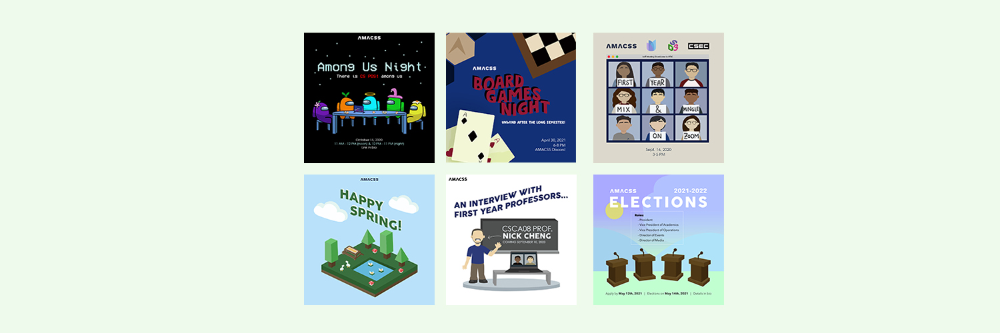
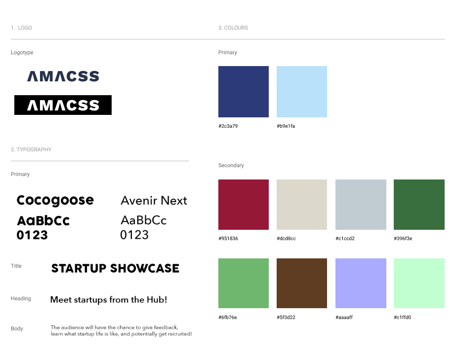
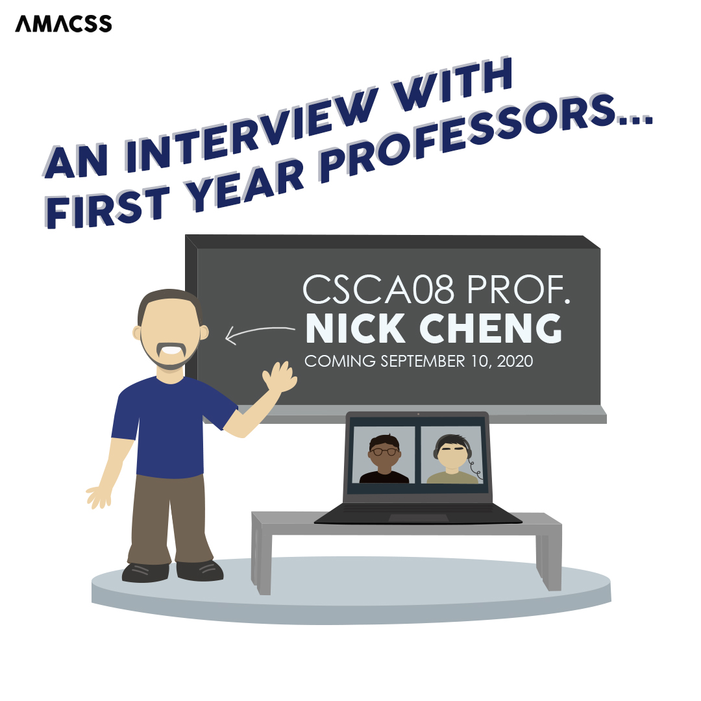
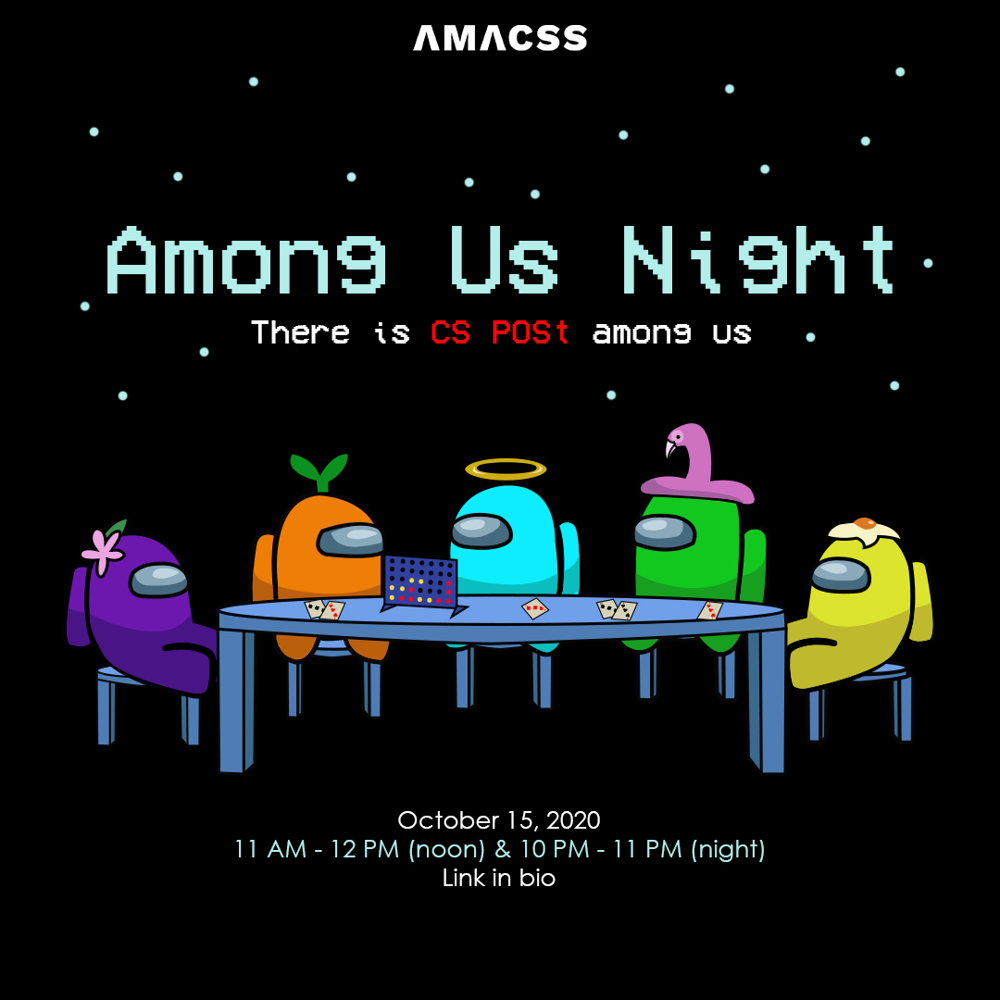
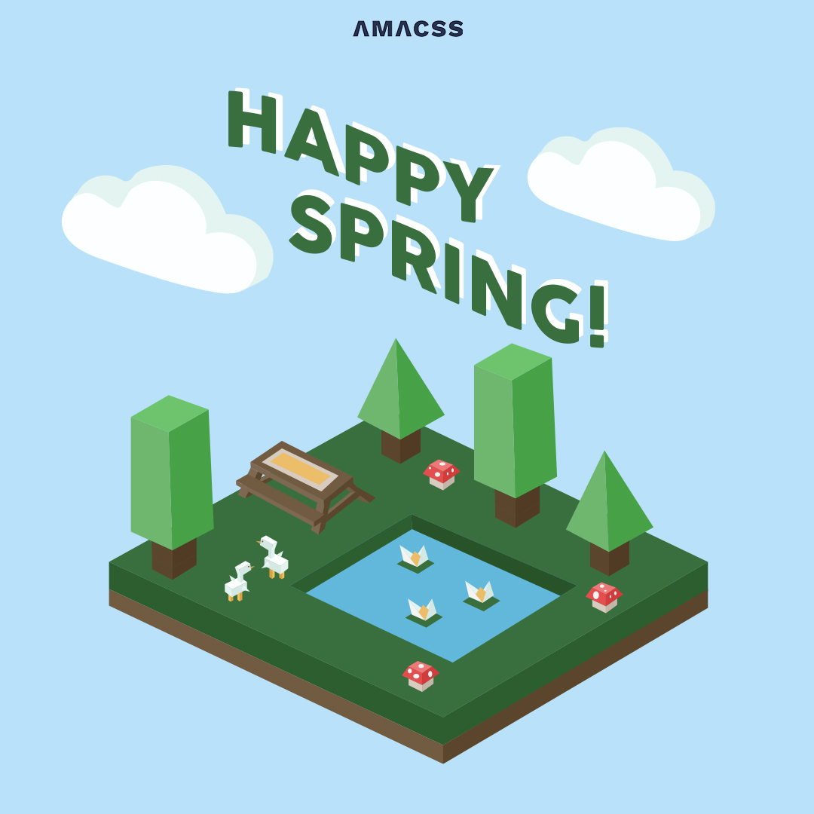

AMACSS - University of Toronto Scarborough

Role
Designer
Timeline
Aug. 2020 -
May 2021
(10 months)
Skills
- Branding
- Illustration
- Visual Design
Tools
- Illustrator
- Photoshop
AMACSS, or The Association of Mathematical and Computer Science Students, is a student club at the University of Toronto Scarborough.
Its purpose is to represent, advocate for, and enhance the university experience of students in the Department of Computer and Mathematical Sciences.
During my time on the team, I collaborated closely with the Marketing Director and the President of the club.
Branding
Prior to joining AMACSS, I had looked through the club's social channels and gained insight from past and current club members on what AMACSS' brand is like.
From what I had observed and gathered, I narrowed down the follow values and personality traits:
Brand Values
- Community
- Inclusion
- Learning
Brand Personality
- Friendly
- Inviting
- Playful
In order to portray a brand that matched the values and personality traits above, it was important to set some general guidelines for elements such as colours and typography.

Visual Design & Illustrations
As a Designer, my main responsibility rested in creating various digital posters to promote the club's events and to send the occasional seasonal message to the AMACSS community.
The posters were created using a mix of Illustrator and Photoshop. The illlustrations in each of the posters were drawn by me. Process-wise, I like starting with a blank canvas and building my designs from there — first
drafting some ideas on paper before bringing them to life digitally.
With AMACSS' brand values and personality in mind, I wanted to use a colour palette that was colourful to emanate playfulness and to create a welcoming image. In addition, I designed illustration-heavy posters in an effort
to create a feeling of friendliness. In the posters, I often drew members of the club to connect the AMACSS community in realizing we are students just like them who are hoping to better everyone's university experience.
Below are a few of the designs that I created in more detail:

To kick off the new school year, one of the first events that AMACSS held was a series of interviews with first-year computer science, math, and statistics professors.
For this first interview, I designed the following poster in a classroom setting featuring our professor, as well as two members of AMACSS who conducted the interview.

Games night is a tradition at AMACSS where students come together to play games and relax. For this special edition of the event, we played the popular multi-player game, Among Us!
This poster features the game's characters sitting around a table, playing various card and board games.

For the next poster, I wanted to incorporate a voxel art style with the illustrations. Specifically, I wanted to use a 3D style that was simplified.
To celebrate the beginning of spring, I included different images that represent a fresh start, such as some greenery and animals (namely, ducks).
Takeaways
During my time at AMACSS, I met a team of great people, and I was also able to grow my skills and knowledge as a designer. I also gained a number of takeaways:
1. Stick to the branding - Originally, I had set out brand guidelines for myself to help create a consistent brand. However, as I created the designs, I wanted to experiment with different styles and colours, which led me to stray away from what I had intended.
Ultimately, when I look back at the designs, I realize that following the branding identity is crucial to creating a cohesive brand and ensuring that every deliverable has a consistent look and feel.
2. Create visual motifs - In addition to using the same colour palette and typography, I've realized that creating visual motifs that relate to AMACSS' values and including them in different designs would help to strengthen the brand. It would bring an element
of consistency and act as reminders of what AMACSS stands for and represents. For example, since one of AMACSS' purposes is to enhance the educational environment for computer science and mathematical students, one visual motif that the club could use is a lightbulb or a gear
to represent learning and generating ideas.
3. Practice makes perfect (as cheesy as this may sound) - Throughout these 10 months, I had the chance to hone my design skills by creating a number of different deliverables. I've also practiced and improved my technical skills with Illustrator and Photoshop.
Although I know that I still have a ton to learn, I feel that I've grown as a designer through this experience, and I know that I can attribute a lot of this growth to the amount of contribution that I was able to give to AMACSS.